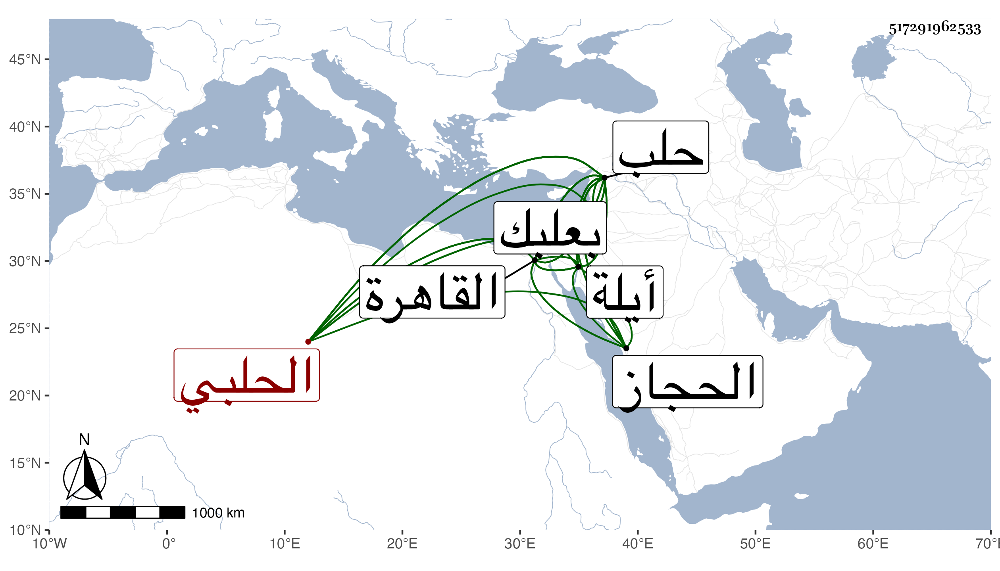

0902Sakhawi.DawLamic.ITO20230111-ara1.EIS1600.517291962533
Biography ID: 517291962533
41
محمد بن عبد الرحمن بن يوسف بن سحلول ناصر الدين أبو عبد الله ابن الشمس الحلبي الماضي والده ويعرف بابن سحلول ، كان إنسانا حسنا رئيسا كبيرا عنده حشمة ومروءة وكرم أخلاق تولى مشيخة خانقاه والده الذي كان ناظر الخاص بحلب ثم مشيخة الشيوخ بحلب بعد موت السيد عماد الدين الهاشمي فباشرها مدة ، وسمع على البرهان الحلبي بها وعلى أحمد بن عبد الكريم الأربعين المخرجة من مسلم وعلى ابن الحبال جزء المناديلي كلاهما في بعلبك ، وسافر إلى القاهرة فحج ثم عاد فمات بعقبة إيلة في المحرم سنة اثنتي عشرة ، ذكره ابن خطيب الناصرية وكذا شيخنا في إنبائه وقال إنه لما ولي مشيخة خانقاه والده كان أهل حلب يترددون إليه لرياسته وحشمته وسودده ومكارم أخلاقه بحيث كان مواظبا على إطعام من يرد عليه ، وعظم جاهه لما استقل الجمال الاستادار بالتكلم في المملكة فإنه كان قريبه من قبل أمه فأم جمال الدين هي ابنة عبد الله وزير حلب عم الشمس أبي هذا ، بل لما قدم القاهرة بالغ الجمال في إكرامه وجهزه حين كان ابنه أحمد أمير الركب معه إلى الحجاز في أبهة زائدة فحج وعاد فمات بعقبة إيلة وسلم مما آل إليه أمر قريبه وآله .
